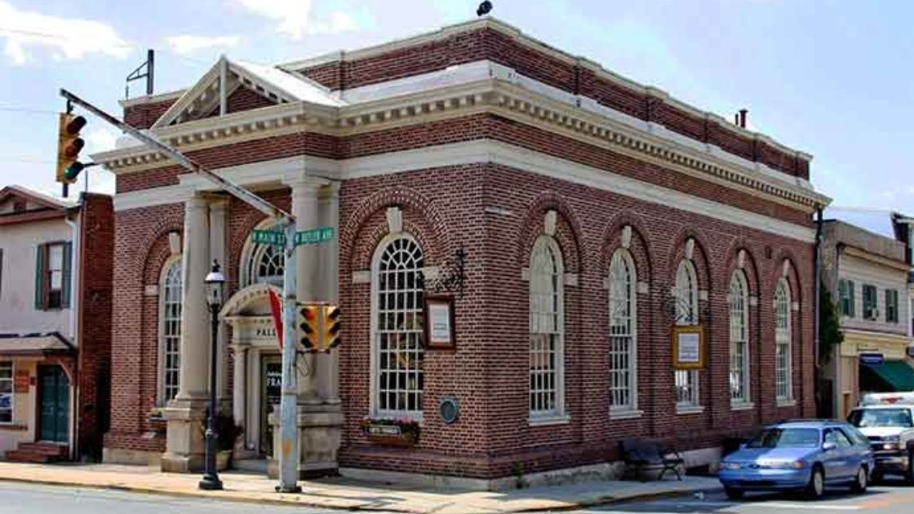
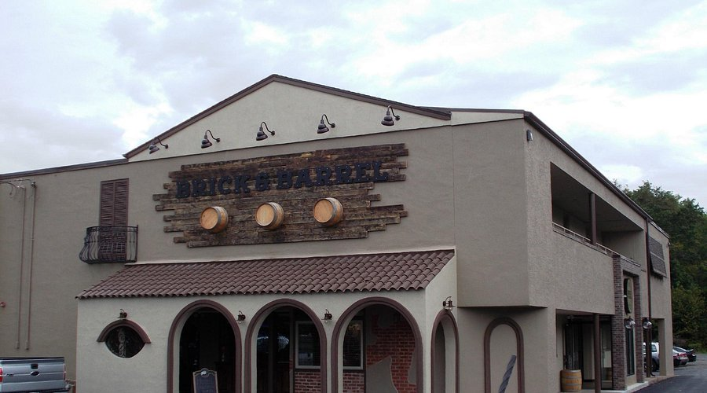
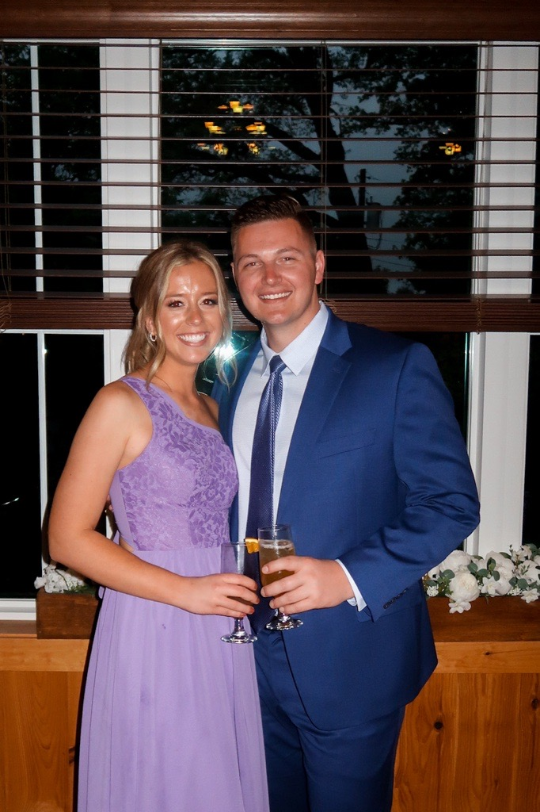
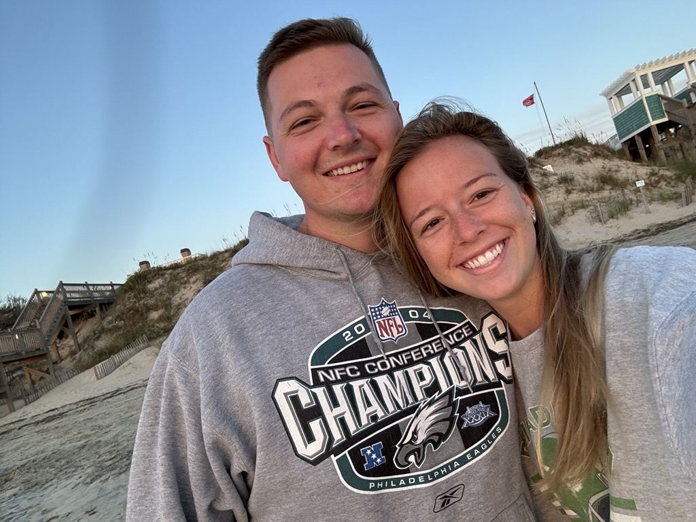
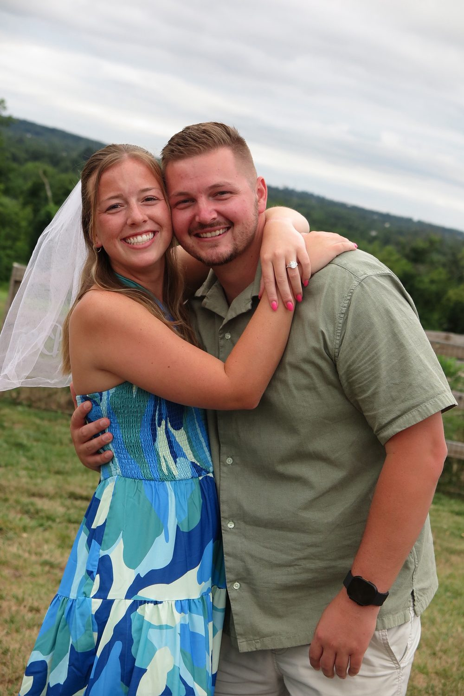
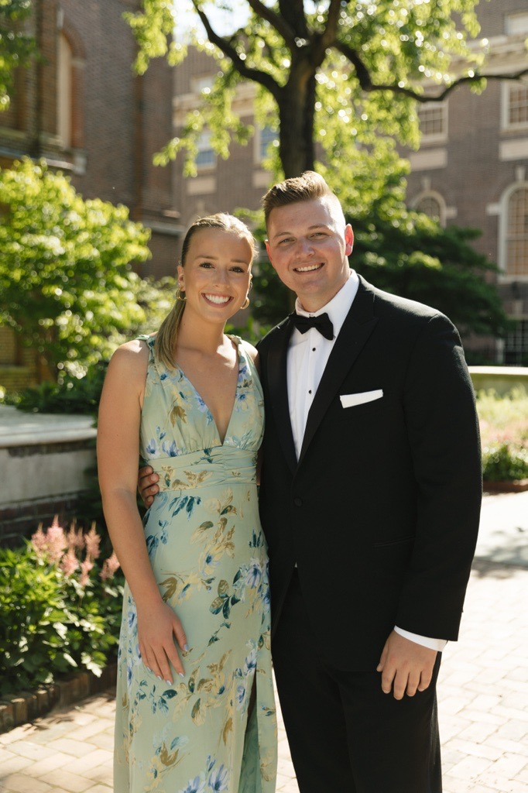

One bold sister, one late-night message, and everything after.
Our milestones
A Tap on the Shoulder
Jeff was up at the bar with his friend Albert, grabbing another round for the group, when a girl walked over and tapped him on the shoulder. It was Victoria — Paige's older sister — and she got straight to the point: "You're cute, you should date my sister".
They talked for a few minutes. Jeff found out who Paige was, and before they went their separate ways he had her Instagram handle. He messaged Paige the moment he got home that night. They talked until neither of them could keep their eyes open.


The First Date
After weeks of late-night messages, Jeff and Paige headed to Brick & Barrel for their first date. The conversation flowed effortlessly. What they liked to do, what they did for work, where they wanted their lives to go. After awhile it didn't feel like a first date at all.
At some point Jeff got up to use the bathroom, and when he came back Paige mentioned that their waitress had stopped by the table to say how cute they were together. Even strangers could see it. By the end of the night, Jeff already knew — Paige was exactly who he'd been looking for.
Making It Official
By February, Jeff was sure he had a girlfriend. There had been date after date, flowers, Valentine's Day gifts — as far as he was concerned, the case was closed. There was just one problem: nobody had told Paige. In her mind, they weren't dating at all.
One night she sat him down and asked, point-blank, "What are we?" Jeff, who thought he'd answered that question with a bouquet weeks earlier, finally said it out loud. That night they became a couple — officially this time, with both of them in on it.


Building Our World
Dating Paige meant getting to know the Mullens, and the Mullens are a game family. Card games around the table, always with a new one to learn, and Switch battles that run later than anyone planned. Jeff learned quickly that game night can get competitive, and that this is a family that genuinely loves being together. Somewhere between rounds, he stopped feeling like a guest.
The trips kept coming, too. A week in Mexico with Paige's family, multiple households all in together. Corolla on the Outer Banks every fall with Jeff's family, a tradition that quietly became non-negotiable. And when it was just the two of them, Tampa and St. Pete: wandering, eating, drinking, and finding the next good thing.
But most of the best moments happened on ordinary weeks. Trying a new bar in Ambler. Another night at Towey's in Hatboro. Nights out with the G6 squad, who never need much of an excuse.
The years filled in fast. Life got fuller with each one.
She Said Yes
Paige's cousin Macenzie and her boyfriend Brendan were coming in from Illinois for a visit, and that was reason enough for a night out: the G6 crew — Jeff, Paige, Devin, Kyle, Victoria, and Chris — plus Macenzie and Brendan, all heading to New Hope for drinks and fries at Stella.
As the day got closer, the plan started to unravel. One by one, everyone decided they'd just drive up separately. Jeff and Paige set off together, while the rest of the group was supposedly right behind them — "on their way," they said. They never showed.
Jeff had a plan, and it started with a parking spot. Paige drove, Jeff rode passenger princess, and he plugged in the directions so she would follow them without asking questions. The lot turned out to be expensive, with no easy path to where he needed them to be. Jeff wanted to stick with it anyway. Paige was not paying that much to park. Jeff gave in, they found street parking for a fraction of the price, and Paige got to say "I told you so" before the night had even started.
As they walked, Jeff kept looking for any alley that would cut through to the waterfront path behind Stella. Then he spotted it: trees, flowers, a bench, and a view of the water and the bridge. It was perfect, until they got close and Paige pointed out the smell. Whatever the ducks had been up to, it was not what he wanted her to remember about this moment.
So they kept walking. Farther along the same path, right behind Stella, the walkway opened up, with the water in front of them and the bridge in the background. Jeff got down on one knee. She said yes.
Afterward, they finally went in for the reservation — just the two of them, savoring the moment before anyone else knew. Then they drove over to Warwick Brewing, where their friends and family were waiting, and celebrated with the people who'd known all along.


Forever Starts Here
It started with a stranger at a bar, a bold sister, and a late-night DM. It ends — or really begins — at Holly Hedge Estate in New Hope, surrounded by the people who have been part of this story all along. We're so glad you're one of them.